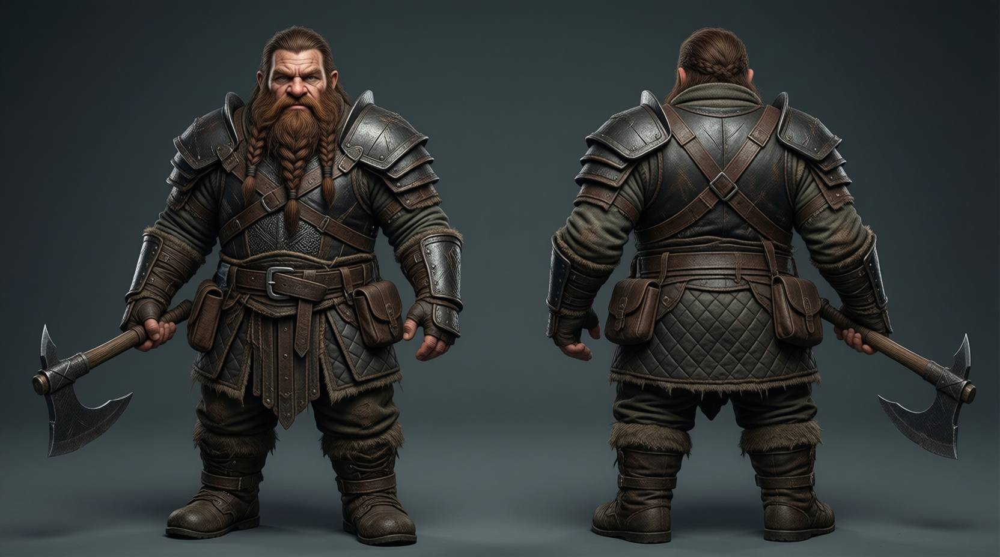
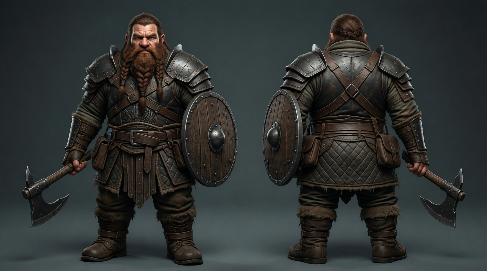

<!doctype html><html lang="ja"><meta charset="utf-8"><meta name="viewport" content="width=device-width,initial-scale=1"><title>ブロムの質感比較</title>
<style>body{margin:0;padding:24px;background:#182729;color:#eee5d5;font:16px system-ui}h1{font-size:22px}p{line-height:1.6}figure{margin:24px 0}figcaption{margin-bottom:10px;color:#d7b571}img{display:block;width:100%;height:auto;max-width:1664px}main{max-width:1664px;margin:auto}</style>
<main><h1>ブロムの質感比較</h1><p>原画を基準にした「手斧＋盾」の候補です。両方を同じ表示幅で並べています。</p>
<figure><figcaption>原画</figcaption></figure>
<figure><figcaption>候補：握りを調整・盾を追加</figcaption></figure>
<p>比較用画像です。衣装部屋への差し替えと背景の透過化はまだ行っていません。</p></main></html>
